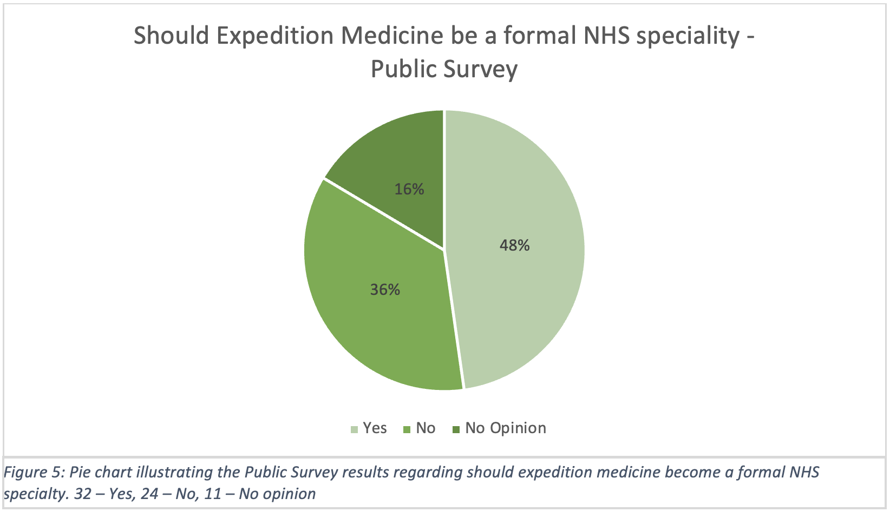
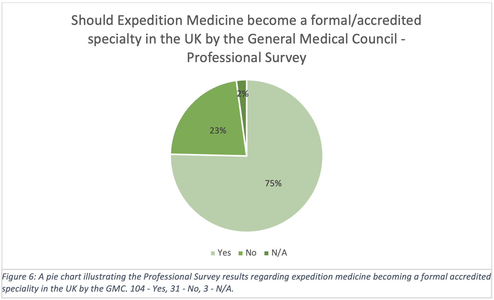

During an initial review of the literature, it was noted that most publications on Expedition Medicine came from a select few authors. Further to this, and owing to the relatively small research base, public opinions on Expedition Medicine were not well documented. This may indicate a susceptibility of the field to be influenced by the personal agendas of these major actors, potentially allowing a publicly funded and resource-scarce organisation such as the NHS to draw conclusions which may not be supported by the general population. To combat this issue, both a public survey and a medical professional survey were conducted to gauge attitudes towards Expedition Medicine becoming a specialty within the NHS. The findings indicate that around half of non-medical professionals (32/67) (Figure 5), and over 75% (104/138) of medical professionals (Figure 6), agreed that Expedition Medicine should become a formal specialty within the NHS.
 To understand why the public was less supportive than those within the medical field, follow-up questions asking for more information were thematically analysed, with the results presented below.
Of the responses, 32 were for, 24 were against, and 11 had no opinion on the matter. Of the 32 respondents citing 'yes', 19 gave further comments. Of these further comments, themes for the agreement were;
- Expedition Medics would require specialised training to be able to practice in this field (10 respondents).
- There is suitable demand for formally qualified individuals (7 respondents).
Respondents believed that the skill set required for the role is niche enough that it warrants its own formalised specialty, with all the appropriate training and safeguards in place. This would ensure that those practising in this field would be guaranteed to have the prerequisite knowledge and practical skills required.
In addition to the skills required to warrant formal specialty status, the public survey data highlighted the perception that there is also adequate demand for professionals in this area. Considering the popularity of Expedition Medicine, the need for professionals with the applicable and appropriate knowledge and abilities is crucial.
There were, however, arguments against this prospect. Of the 24 respondents who responded 'no', 20 gave further comments fitting the core themes of;
- Having a formal specialty in this area is non-essential for the NHS within the current climate (11 respondents)
- It is not justifiable to spend public taxes on a specialty which will operate primarily out of the UK (8 respondents).
Respondents felt that due to the area being sufficiently niche, it would be irrelevant to most UK medical practice and that the focus should rather be on care benefiting the general public and British healthcare system. Respondents were critical of the creation of a NHS specialty devoted to private, for-profit endeavours and commented that medical professionals working on these expeditions, for these private companies, should receive training and funding outside of the NHS.
In the remaining 11 responses of 'no opinion', 5 gave further comments, with the general position being that the respondents felt they knew an inadequate amount about Expedition Medicine to make an informed decision.
Return To Findings“This site was made by a group of University of Edinburgh medical students who studied this subject as part of the SSC. This webfolio has not been peer reviewed. We certify that this webfolio is our own work and that we have authorisation to use all the content (e.g. figures / images) used in this webfolio”
Tutor = Dr Oliver Vick (Oliver.Vick@ed.ac.uk)
Word Count = 505
Home